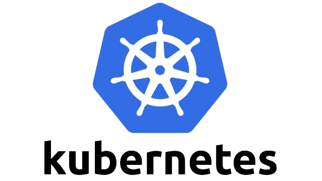
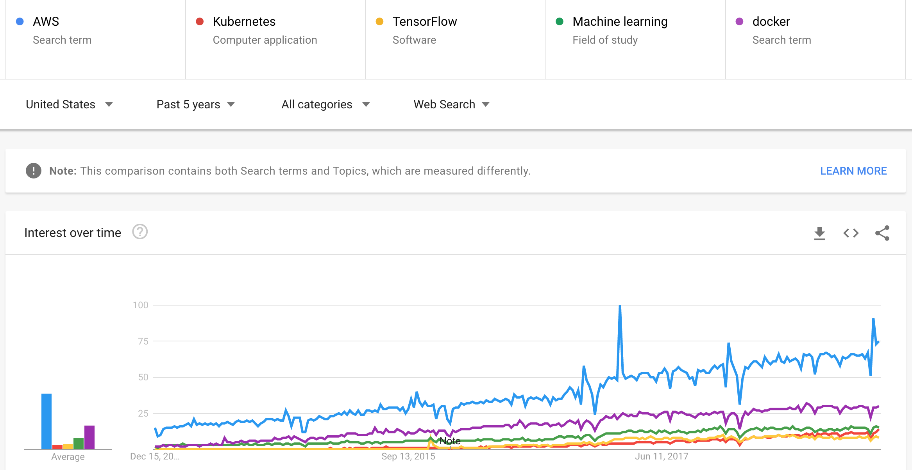

2019 Trends: Kubernetes and Container Orchestration
This report is part of an ongoing series Patterson Consulting offers on our public blog as part of looking at current technology trends in the market. This post looks at some of the market trends we've seen in 2018 for Kubernetes.
Some overall 2018 infrastructure trends we note as of interest as we go into 2019:
- Mixtures of on-premise, cloud, and hybrid deployments are becoming more popular with enterprises.
- The 3 major "big cloud" vendors continue to capture a number of workloads that move to the cloud. some of these workloads oscillate between cloud and on-premise.
- Docker is synonymous with the term "container"
- Our customers are either using Kubernetes or strongly considering it as their container orchestration platform
Some highlights of this report include:
- Upward growth trends in interest for Cloud Infrastructure, Kubernetes, and Docker
- Major enterprise technology infrastructure products (Cloudera, Confluent, MapR) adopting kubernetes
- Major cloud vendors (AWS, Google Cloud Platform, Azure) consolidating on Kubernetes for container orchestration
- Kubecon attendance doubling year over year for the past 3 years (US + EU)
Why is Kubernetes Compelling?
Planning and deploying infrastructure on-premise, in the cloud, and in hybrid situations is a key topic in the 2019 infrastructure landscape. Kubernetes is a container orchestration system for containers that is meant to coordinate clusters of nodes at scale in production in an efficient manner. Kubernetes works around the idea of pods which are scheduling units (each pod containing one or more containers) in the Kubernetes ecosystem. These pods are distributed across hosts in a cluster to provide high availability. Kubernetes itself is not a complete solution and is and is intended to integrate with other tools such as Docker, a popular container technology.
A container image is a lightweight, stand-alone, executable package of a piece of software that includes everything needed to run (code, runtime, system tools, system libraries, settings). Colloquially containers are referred to as "docker", but what the speaker typically means are "containers" in the general sense. Docker containers made it significantly easier for developers to enjoy parity between their local, testing, staging, and production environments. Containers allow teams to run the same artifact or image across all of those environments, including a developer's laptop and on the cloud. This property of containers, especially when combined with container orchestration with a system like kubernetes, is driving the concept of "hybrid cloud" in practice going into 2019.
Kubernetes shines when we have a lot of containers that need to be managed across a lot of machines (on-premise, in the cloud, or a mixture of both). Docker and Kubernetes are not direct competitors, but complementing technologies. One way to think of it is docker is for managing images and individual containers while Kubernetes is for managing pods of containers. Docker provided an open standard for packaging and distributing containerized applications, but it did not solve the container orchestration (inter-communication, scaling, etc) issue. Competitors to Kubernetes in this space are Mesos and Docker Swarm, but we're seeing the industry converge on Kubernetes as the standard for container orchestration (as is evident later in this article).
Who is Most Interested in Kubernetes?
Some of the key enterprise personnel that have the most interest in Kubernetes include:
- DevOps Engineer
- Platform Architect
- Data scientists
- Data Engineer
A 2017 Forrester study on containers found that:
- 66% of organizations who adopted containers experienced accelerated developers efficiency
- 75% of companies achieved a moderate to significant increase in application deployment speed
Interest and Adoption Trends of Kubernetes
With Google Trends, when we look at search interest over time for a topic, we’re looking at that interest as a proportion of all searches on all topics on Google at that time and location. The context of our numbers also matters. Google Trends indexes their data to 100, where 100 is the maximum search interest for the time and location selected. In the image from google trends below, we plot interest in the last 5 years for the following terms:
- AWS
- Kubernetes
- TensorFlow
- Machine Learning
- docker

We baseline on general cloud interest with the term "AWS" and we can plainly see its the most popular of the group by a wide relative margin. We also have "docker" in the group to show not only relative interest, but also a trend for the term which generally matches the trajectory of AWS as a search term. We further add in the terms "machine learning" and "TensorFlow" to see how they are performing as "hot" terms but in comparison to "AWS" and "docker". Finally we show "kubernetes" on the graph, which is tracking slightly ahead of "Tensorflow" at this point. Overal these terms are all on an upward trajectory, and it is worth note that Kubernetes is now passing "TensorFlow" and about to rival the term "machine learning". This leads us to tag container orchestration as a technology on the rise.
Selected Media on Kubernetes in 2018
We also saw a lot of technology sector press on Kubernetes as a technology in 2018. Below we highlight two passages from Zdnet's coverage on Kubernetes:
“According to a 451 Research study, containers are taking over cloud server deployments, and Kubernetes is taking over container orchestration.” … “Kubernetes's ability to work on both the public and private cloud has made it a favorite with businesses work with hybrid-clouds. The survey of more than 200 enterprise IT decision-makers revealed that 57 percent of organizations prefer a combination of both hosted Containers as a Service (CaaS) and on-premises CaaS, with a fairly even split among those opting for one or the other, Kubernetes, which enabled them to free up resources to focus priorities, hybrid-cloud/cross-cloud support, the ability to bring your own compute, and avoid vendor lock-in.“
ZDNet.com: "Kubernetes Leads Container Orchestration"
Beyond the technology press, infrastructure and platform product companies are paying attention to Kubernetes as well, as expressed by MapR in the quote below.
“If you have been following the world of containers, you already know that Kubernetes has won the container orchestration war.“
MapR.com: "Containers, Kubernetes, and MapR: The Time is Now"
Cisco has put some chips on Kubernetes as a bet, making it a key part of their new UCS C480 ML Offering:
Cisco leverages Kubernetes to manage the compute and storage resources inside the latest C480 ML Offering, going as far as to become a contributor to the Kubeflow project to help make it ready for their hardware. They are targetting the hybrid cloud experience for the new UCS offering, stating "Companies running Kubeflow on the new UCS server will be able to use the same machine learning tools on-premises and on Google Cloud". The article also states that Cisco is making further efforts to integrate big data tool offerings from MapR, Cloudera, and Horton such that the "UCS server is part of the big data cluster" and that “It’s able to support much more variety of software, and the particular software stack can oftentimes be curate by the data scientist themselves for particular needs”.“More C480/Cisco AI ecosystem work involves Cisco contributing code to the Google Kubeflow open-source project, which integrates TensorFlow with Kubernetes, announcing its DevNet AI Developer Center for developers, operators, and data scientists, a DevNet Ecosystem Exchange, and working with Anaconda so data scientists and developers can collaborate on machine learning using languages such as Python.“
TheRegister.co.uk: Cisco C480ML Announcement Coverage
Redhat also wrote up notes about their investment in the Kubernetes space:
“Developers and operators are increasingly embracing Linux containers and Kubernetes to help accelerate application development and deployment. Containers and Kubernetes abstract and simplify access to underlying infrastructure and provide robust capabilities to manage application lifecycle and development workflows. OpenShift, with additional capabilities for self-service, build and deployment and automation, further enhances this experience. Additional features in security, storage, networking, monitoring, and observability make it well suited for enterprise environments.“
openshift.com: "Machine Learning on OpenShift and Kubernetes"
Nvidia found Kubernetes to be useful in managing GPUs as resources in a cluster in 2018 as well:
“To help accelerate end-to-end data science training, NVIDIA developed RAPIDS, an open-source data analytics and machine learning acceleration platform designed exclusively for GPUs. As a step towards wider integration, the Kubeflow team announced the availability of the NVIDIA RAPIDS GPU-accelerated libraries as an image on the Kubeflow Pipelines.“
nvidia.com: "NVIDIA RAPIDS Accelerates Kubeflow Pipeline with GPUs on Kubernetes"
Another Hadoop vendor also saw enough of a market trend towards hybrid cloud with kubernetes to start making an investment in the space:
“...Hortonworks is getting HDP, HDF, and DataPlane Services (DPS) certified on Red Hat's OpenShift Kubernetes container application platform. IBM, which OEMs HDP, is following suit with Cloud Private for Data (ICP). While OpenShift addresses private cloud, the open question is support from each of the cloud provider Kubernetes platforms.“
zdnet.com: "Hortonworks unveils roadmap to make Hadoop cloud-native"
Also compelling was Cloudera's acknowledgment of the Kubernetes market shift with their own investment as highlighted in the quote below.
With all 3 major Hadoop distribution vendors embracing Kubernetes (as opposed to YARN-only execution models), it is telling for the future of big data workloads in how they are likely to be changing orchestration strategies. We also saw competing container orchestration platforms such as Mesosphere begin offering Kubernetes as well.“The architecture and the branding reflect two shifts in the market. The first is the move to cloud. While we estimate that only about 25 – 30% of Cloudera's installed base is running workloads in the cloud, the velocity toward cloud adoption is unmistakable. Ovum has predicted that next year, half of new big data workloads will be running on the cloud. And that dictates supporting the type of autoscaling that is possible in the cloud.“ ... "With Kubernetes becoming the de facto standard for cloud native compute (even AWS, which had its own proprietary container management services, has bit the bullet and begun offering a managed Kubernetes service), the die was cast for Cloudera. If it wanted to support customers in the cloud, DSW or its successor would have to embrace Kubernetes, not YARN."
zdnet.com: "Cloudera Machine Learning release takes cloud-native path"
With interest in container orchestration emerging across the enterprise data management landscape, we see this trend as being supported by major vendors in non-trivial ways.
Big Cloud and Managed Kubernetes
In the age of cloud infrastructure, what "big cloud" (AWS, Azure, GCP) does tends to significantly impact how enterprises build their own infrastructure today. In 2018 we saw all 3 major cloud vendors offer managed kubernetes as part of their infrastructure:
In late 2017, after intially offering their own container service, Amazon joined the other two members of big cloud and offered Amazon EKS as a first class supported citizen on AWS.On-Premise and Hybrid Managed Kubernetes
We also see the classical on-premise infrastructure vendors offering platforms to control Kubernetes environments:
Growth in Kubernetes Conferences
Kubecon is a conference dedicated to Kubernetes and other cloud native technologies. Kubecon attendance has doubled year over year for the past 3 years, both in the US and for the EU version of the conference.
Kubecon Conference Growth for North America
- KubeCon 2018: 8,000 attendees
- KubeCon 2017: 4,100 attendees
- KubeCon 2016: 1,000 attendees
- KubeCon EU 2018: 4,300 attendees
- KubeCon EU 2017: 1,500 attendees
Patterson Consulting Field Notes on Kubernetes
In 2018 we saw customers interested in the following themes:
- Moving ETL and data science workloads to the cloud (and then back, in many cases)
- Managing and scheduling machine learning workloads across multiple teams in a multi-tenant scenario
- Managing infrastructure (compute, storage) resources across teams
- Understanding and planning for hybrid cloud scenarios
- Understanding how to use Kubernetes to provide container orchestration on-premise and in the cloud
- Managing multiple systems such as Kafka, Hadoop, and machine learning infrastructure systems yet allowing them to interop
- Kafka
- Hadoop / Data Lake
- Machine Learning Infrastructure
Kafka and Kubernetes
In our customer accounts in 2018 we did not see many folks running Kafka on Kubernetes, but we did see these systems running together in the same shop and the discussion came up with customers. We generally give our parter's advice for best practices on specific technology. Confluent's Gwen Shapira gives two reasons that she sees to run Kafka on Kubernetes:
- If you are running most of your other applications and microservices on Kubernetes, it becomes the organizational path of least resistance
- most orgs underestimate how many Kafka clusters they will end up deploying. As the number of use cases grow, you end up with multiple production clusters (so Kafka management here makes sense)
Hadoop and Kubernetes
Kubernetes is entering the conversation for not only Kafka discussions with our customers, but also how it impacts the holistic data lake strategy as some workloads shift to the cloud. Given that much of the Fortune 500 runs some form of Hadoop today for their ETL and analytics, Hadoop and Kubernetes conversations are colliding more often these days. Overall we're recommending to our customers to hold off on any Hadoop and Kubernetes integrations right now. Cloudera Manager does a great job for on-premise and in the cloud deployments. For transient clusters, systems like Amazon EMR make a lot of sense.
Machine Learning Infrastructure and Kubernetes
We will note, however, that interop between Hadoop workloads and specialized Kubernetes-based machine learning workloads are on the horizon (as we see Cloudera using Kubernetes for their new data science tools as opposed to YARN). In earlier years Spark had been a key technology for running machine learning jobs, but in more recent years we see enterprises shifting towards GPU-based training in containers that may not live on a Hadoop cluster. The DevOps, IT, and Platform teams working with these data scientists wanted to make sure they were setting the teams up for success while also having a manageable infrastructure strategy. The folks in charge of these platforms were concerned with using the cloud in a way that did not cost too much but took advantage of the transient nature of cloud-based workloads. Hadoop and Spark are still key tools for data storage and processing, but increasingly Kubernetes has come into the picture to manage the on-premise, cloud, and hybrid workloads. We see a growing need to make these worlds work together on data lakes whether they were on-premise or in the cloud, or somewhere in-between .
In our next 2019-trends post, we'll take a look at Kubeflow, an emerging Kubernetes-based system for managing machine learning infrastructure.